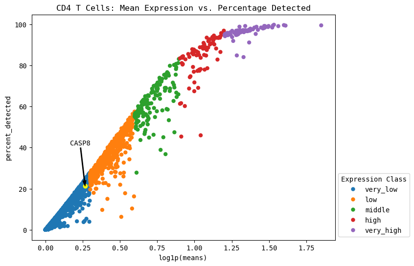

Using CellPipeline#
A cell type specific analysis and visualization tool for the gene of interest#
[3]:
from gene_report.cell_pipeline import CellPipeline
cp = CellPipeline("/Users/samibening/Projects/Bachelor/", "data/output/adata.h5ad")
adata = cp.get_adata()
adata
[3]:
AnnData object with n_obs × n_vars = 5397 × 16719
obs: 'sampleID', 'barcode', 'n_genes_by_counts', 'log1p_n_genes_by_counts', 'total_counts', 'log1p_total_counts', 'pct_counts_in_top_20_genes', 'total_counts_mt', 'log1p_total_counts_mt', 'pct_counts_mt', 'total_counts_ribo', 'log1p_total_counts_ribo', 'pct_counts_ribo', 'total_counts_hb', 'log1p_total_counts_hb', 'pct_counts_hb', 'outlier', 'mt_outlier', '_scvi_batch', '_scvi_labels', 'leiden_res0_6', 'manual_celltype_annotation', 'celltypist_cell_label', 'celltypist_conf_score', 'celltypist_cell_label_coarse'
var: 'n_cells', 'highly_variable', 'means', 'dispersions', 'dispersions_norm'
uns: '_scvi_manager_uuid', '_scvi_uuid', 'celltypist_cell_label_coarse_colors', 'celltypist_cell_label_colors', 'hvg', 'leiden', 'leiden_res0_6_colors', 'neighbors', 'pca', 'sampleID_colors', 'umap'
obsm: 'X_pca', 'X_scVI', 'X_umap'
varm: 'PCs'
layers: 'int_norm', 'log_int_norm', 'log_norm', 'norm', 'raw'
obsp: 'connectivities', 'distances'
[2]:
# TODO: print cell type names here? Easier to select?
[4]:
# set your gene of interest (GOI)
GOI = "CASP8"
# set your cell type of interest (cell_type)
# set this later on, after expression across cell type plots? Then can't run the entire notebook easily
cell_type = 'T Cell'
[5]:
# UMAP of coarse cell types
cp.plot_umap()
[5]:
expr_sum = cp.explain_expr_celltypes(GOI)
expr_sum
# TODO: sort this by expression high to low?
[5]:
| Cell type | Expression class | Avg. expression over cell type | |
|---|---|---|---|
| index | |||
| CASP8 | mLTo | very low | 0.034 |
| CASP8 | Monocytes | very low | 0.171 |
| CASP8 | B Cell | very low | 0.221 |
| CASP8 | Epithelial | very low | 0.135 |
| CASP8 | T Cell | low | 0.399 |
| CASP8 | Dentritic | very low | 0.162 |
| CASP8 | Plasma | very low | 0.184 |
| CASP8 | Enteroendocrine | very low | 0.163 |
| CASP8 | Colonocyte | very low | 0.120 |
| CASP8 | myofibroblast | very low | 0.141 |
| CASP8 | Stromal | very low | 0.120 |
| CASP8 | Adult Glia | very low | 0.027 |
| CASP8 | Pericyte | very low | 0.054 |
| CASP8 | ILC3 | very low | 0.266 |
| CASP8 | NK cell | very low | 0.357 |
| CASP8 | Macrophages | very low | 0.269 |
| CASP8 | Goblet | very low | 0.246 |
[6]:
cp.plot_expressions(GOI, cell_type, show_summary=True)
# Can change show_summary=True to show the summary of the expression classes (quantile thresholds and cell counts per category)

Summary for all cells:
Quantile thresholds:
very low: 90.8188, low: 97.769, middle: 99.0909, high: 99.7488, very high: 99.7500
Number of genes per category:
very_low: 15184
low: 1162
middle: 221
high: 110
very_high: 42
Summary for T Cell cells:
Quantile thresholds:
very low: 90.2805, low: 97.5298, middle: 99.1208, high: 99.7488, very high: 99.7500
Number of genes per category:
very_low: 15094
low: 1212
middle: 266
high: 105
very_high: 42
GOI expression across cell types#
[7]:
# find expression across cell types of GOI here
cp.dotplot(GOI)
[8]:
cp.dotplot(GOI, cell_type=cell_type)
[9]:
cp.matrixplot(GOI, cell_type=cell_type)

[10]:
cp.heatmap(GOI)
# show different normalization methods here?
[11]:
# TODO: patient specific data:
# Any specific things here?
Expression vs. Detection visualization#
This can contextualize the expression levels we observed previously. In single-cell RNA-seq, only a random sampling of the RNA present in a cell is selected to be sequenced. By pure chance, lowly expressed genes may not be present in all the sampled RNA due to their low prevalance. Here, we can inspect the maximum percentage of expression expected in all genes, specifically our gene of interest.
[15]:
cp.expression_vs_detection(GOI, cell_type=cell_type)
# Can add "cell_type=cell_type" to plot only the cell type of interest
# rather have a side by side view here again?
# todo this section before dotplots etc.
Automatically identify lower outliers (clue to look at celltype subset)#
[16]:
cp.plot_outliers(GOI, cell_type=cell_type)
# Can add "cell_type=cell_type" to plot only the cell type of interest
[14]:
cp.list_outliers()
# show top 5 most extreme outlier genes
# (by orthogonal distance to the max line)
# can show top x genes by adding "head=x" to the function
#TODO: make outlier plot above interactive? Hover over dot to show gene name etc. (sami: use plotly)
# Slider for threshold value?
[14]:
| log1p(means) | percent_detected | distance | is_outlier | |
|---|---|---|---|---|
| index | ||||
| CXCL14 | 1.002802 | 0.075783 | 0.848793 | True |
| IGLC7 | 0.932603 | 0.045951 | 0.772127 | True |
| IGHG1 | 0.963830 | 0.067074 | 0.766993 | True |
| IGHM | 1.242698 | 0.212525 | 0.760515 | True |
| IGFBP7 | 1.167887 | 0.246063 | 0.713274 | True |